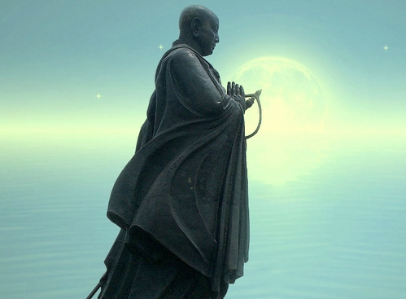
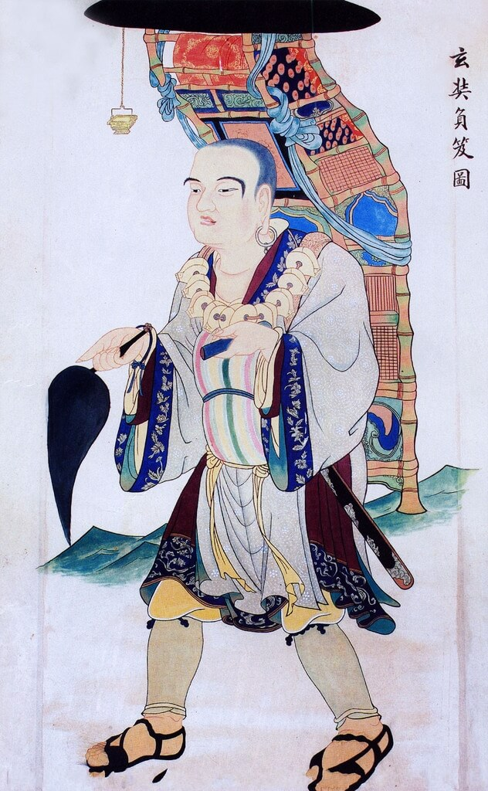
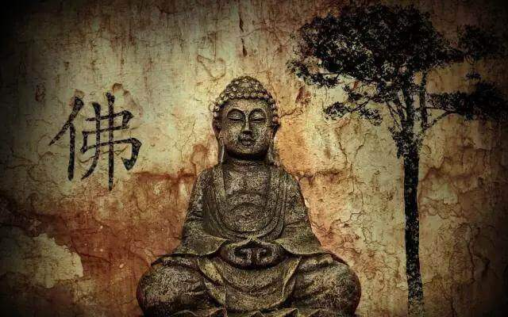
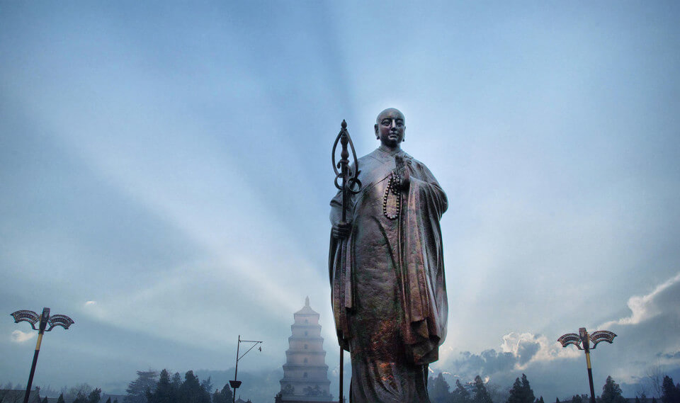
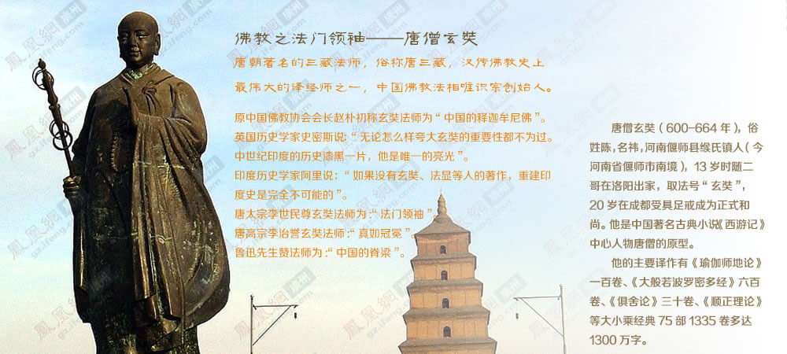
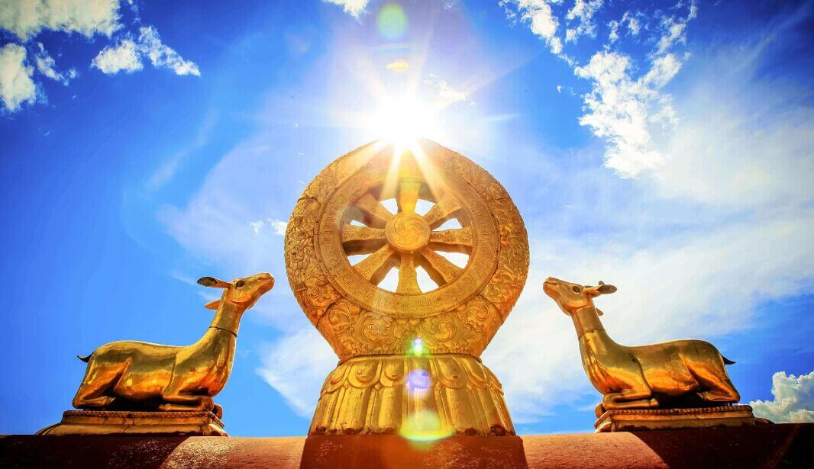

一、法师身世
玄奘法师俗名陈袆（也有作“祎”），法号玄奘，生于隋文帝开皇二十年（600），卒于唐高宗麟德元年（664），是我国唐代着名的三藏法师，杰出的佛学家、翻译家、旅行家，中国佛教法相宗创始人。
玄奘祖籍颍川，洛州缑氏（今河南偃师缑氏镇陈河村）人，汉太丘长陈仲弓之后。高祖陈湛曾任北魏清河太守。曾祖陈钦，北魏上党太守、征东将军，封南阳郡开国公。祖父陈康以学优仕齐，任国子博士。父亲陈慧曾任隋朝江陵、陈留县令，后退隐居家，潜心儒学。母亲宋氏是洛州长史之女。
玄奘自幼由父亲亲自教授儒家学问，他闻一知十，聪悟超群。玄奘十岁时，因父母丧亡，家道困窘，便跟随他的二哥长捷法师在洛阳净土寺学佛，诵读《维摩诘经》和《法华经》。
隋炀帝大业八年（612），玄奘十三岁时，信佛的隋炀帝派大理寺卿郑善果到洛阳剃度僧人，只剃度十四人，而学业优秀者几百人。玄奘因为年龄小，没有参加选拔，只是站在门外观看。
在隋朝乃至唐朝时期，为保证种田当兵的男丁数量，僧人数量受到严格的管控，选拔僧人要经过考试。“有知士之鉴”的郑善果看到玄奘，大为惊奇，于是有了下面的对话：
郑善果问：“求度耶”？
玄奘回答：“然。但以习近业微，不蒙比预”。
郑善果又问：“出家意何所为”？
玄奘回答：“意欲远绍如来，近光佛法”。
郑善果很赞许玄奘的志向，又看玄奘器貌不凡，破格把他免试录入僧籍。对此郑善果解释说：“诵业易成，风骨难得。若度此子，必为释门伟器”。
“远绍如来，近光佛法”，这也是玄奘弘法一生的真实写照。
当时的洛阳佛教氛围浓厚，每个寺庙都有不同的着名法师登坛讲经，玄奘涵泳其间，往来求学。他除了随二哥长捷法师修习佛经外，还跟景、严法师学习《涅盘经》、《摄大乘论》，其声名在洛阳佛教界人尽皆知。
唐高祖武德元年（618），玄奘和长捷法师为避战乱，西入长安。因缺乏修业的条件，加以得知当时名僧多往四川，于是转赴成都。同年冬天，玄奘和长捷法师到达成都。
唐高祖武德三年（620），玄奘二十一岁时，在成都大慈寺受具足戒，坐夏学律。
玄奘在四川期间，敬惜光阴，苦学不倦，随基、暹、震法师学《摄大乘论》、《阿毗坛论》、《迦延》。二三年间，他已究通诸部，和哥哥长捷法师被人称为“陈门双骥”，声名远播。
唐高祖武德六年（623），为进一步学习佛法，二十四岁的玄奘不顾兄长的劝阻，与商人结伴，泛舟三峡，游学而去。
在荆州天皇寺，玄奘开讲《摄大乘论》和《阿毗昙论》，从夏到冬，各讲三遍。
在相州，玄奘拜慧休法师学《杂心论》。
在赵州，玄奘谒道深法师学《成实论》。
在长安大觉寺，就岳法师学《俱舍论》。
玄奘再次来到长安时，他已造诣深厚，誉满京师。这时恰逢一位印度名僧在长安讲经，好学的玄奘从他那里得知，印度那烂陀寺藏经丰富，高僧云集，那里的住持戒贤法师精通一切佛法经论。
玄奘心向神往。
玄奘在穷究各家学说的过程中，深感各家学说纷纭，众师“各擅宗途，验之圣典，亦隐显有异，莫知适从，乃誓游西方以问所惑”。于是他结约伴侣，向朝廷陈表，请求西行求法。
当时的唐朝开基未久，国政尚新，疆界不宁，严禁国民越境。西行求法的申请没有得到官方许可，同伴们都退缩了，唯玄奘立意不改。他学习梵文，锻炼体力，为西行做各种准备。
唐太宗贞观元年（627）农历八月，长安周围霜降秋害，庄稼欠收，皇帝诏令百姓四散各地就食。二十八岁的玄奘和一个还乡的秦州僧人结伴离开京城，踏上了西去的路程。

二、偷越边关
在唐朝，去印度有两条路可以选择，一条海路，一条陆路。海路当时不发达，一般人只能走陆路。从长安出发，一路往西，经过西域和中亚，抵达印度。
玄奘准备从边境重镇瓜州偷渡到西域小国伊吾，然后从伊吾取道印度。
玄奘的西域之行，长路漫漫，凶险重重。从瓜州到伊吾，是他最为艰难和孤独的一段路程，随时可能丧命。
在凉州，玄奘被凉州都督李大亮责令返回。河西佛教领袖慧威法师理解玄奘西行求法的志向，秘密派两个弟子给他带路。他们昼伏夜行才到了瓜州。
在瓜州，玄奘了解到，要想偷越瓜州边境，几无可能。首先拦路的是湍急流深的葫芦河，然后是西境襟喉玉门关，关外西北有“五烽”，兵士日夜把守，五烽之间各相距百里，中间绝无水草，五烽之外又是八百里大沙漠莫贺延碛。只有走出莫贺延碛，才能到达伊吾国。
玄奘一筹莫展，在瓜州逗留了一个多月，还是找不到越境的办法。这时凉州府缉拿玄奘的通缉访牒发到了瓜州，州吏李昌钦慕玄奘的品格和志向，在玄奘面前撕毁文书，催促玄奘早日离开。
万般无奈之下，玄奘在庙里到弥勒佛的像前祈请，这时他遇到了前来礼佛的胡人石盘陀。石盘陀围着玄奘转了两三圈，请玄奘为他授成为居士的“五戒”，玄奘答应了。玄奘见石盘陀体格健壮，态度恭敬，又是受戒之人，就告诉了石盘陀自己西行的想法，石盘陀一口答应送玄奘过五烽。玄奘大喜，立即买马备好行装。
第二天傍晚，玄奘躲在草丛里，等待和石盘陀会面。石盘陀和一个老胡人牵着一匹老瘦赤马一起走了来。这个老胡人曾往返伊吾瓜州之间三十多回，熟悉路途，只是路途凶险，老胡人已经不想再冒险了。
老胡人劝阻玄奘：“西路险恶，沙河阻远，鬼魅热风，遇无免者。徒侣众多，犹数迷失，况师单独，如何可行？愿自料量，勿轻身命”。
玄奘答道：“贫道为求大法，发趣东方，若不至婆罗门国，终不东归。纵死中途，非所悔也”。
老胡人把老瘦赤马交给玄奘说，这匹马曾往返伊吾十五次，身体健壮而且认识路，你的马年轻走不了远道，骑着它去吧。
于是，玄奘骑着这匹老瘦赤马，和石盘陀趁夜色来到葫芦河边。玉门关遥遥可见。石盘陀斩木为桥，布草填沙，他们驱马渡过了葫芦河。
夜里石盘陀看过前方路途之后，觉得路途险远，害怕起来，不想往前走了。他深怕玄奘过五烽时被抓，将他供出来作为同谋一并处死，因此打算杀玄奘灭口。玄奘看出石盘陀的心思，发誓：“纵使切割此身如微尘者，终不相引”。并赠马相谢，石盘陀才放心离去。
由于没有通关文书，玄奘只能绕玉门关而行。
玄奘孑然一身走进了沙漠中，他只能看着前面的白骨马粪行进。他出现了幻觉，好像看到沙漠里有行进的军队和飘扬的旌旗，千变万化，飘忽不定。他坚定一下心志，继续向前走。
穿过八十多里的沙漠，第一烽到了。
沙漠里的关口烽燧，都是设在水源近旁，因为管住了水，也就管住了过往的人。茫茫沙漠中，没有水，人根本无法存活。
玄奘怕被守关的将士发现，白天藏在沙沟里，到了夜晚才偷偷出来取水，可还是被守军发现了。
校尉王祥是个信佛之人，他认为玄奘走不出沙漠，所以想送玄奘到他的家乡敦煌弘法，被玄奘拒绝。王祥看到玄奘西行决心坚定，于是全力帮助玄奘。他安置玄奘吃饭休息，并为玄奘准备好炒饼和水，还亲自送出十几里之外。王祥给玄奘指了一条直接到第四烽的路，让玄奘去第四烽找他的宗亲王伯陇帮忙。
玄奘感激万分，与王祥泣拜而别。夜幕降临时，玄奘到了第四烽。王伯陇高兴地接待了玄奘，不仅给他补充了给养，还施舍给他一个装水的大皮囊。王伯陇也为玄奘指了一条路，说：“师不须向第五烽，彼人疏率，恐生异图。可於此去百余里，有野马泉，更取水”。
玄奘走进了长八百余里的戈壁沙漠莫贺延碛。
莫贺延碛古称沙河，上无飞鸟，下无走兽，更没有水草。
行走在沙漠中的玄奘可以说是顾影惟一，苍茫天地间，只见一人一马和他们的影子。
死寂的沙漠中，似乎有各种妖魔鬼怪在绕人前后。玄奘一边念诵《般若心经》，一边坚持前行。
玄奘走了一百多里路后，没有找到野马泉，发觉迷路了。取皮囊喝水时，又失手把皮囊打翻了，准备跋涉千里的救命水，一下子流光了。
看来惟一的选择，就是返回第四烽了。
玄奘回走了十多里后，想起自己“若不至天竺终不东归一步”的誓言，他后悔了，掉转马头，再向西而去，“宁可就西而死，岂归东而生！”
沙漠中的玄奘，只身孤影，四顾茫然。夜里，好像有很多妖魔鬼怪在举火游荡，火光如同星星一样光灿耀眼：白天，黄沙随狂风飞舞，暴雨一样弥天漫地。玄奘一无所惧，奋力前行。
玄奘断水四天五夜，口腹干燥，气若游丝。他已无力行走，眼睛也因缺水几近失明，只能躺倒在沙漠里，默默地念诵救苦救难观世音菩萨的名号，并上告菩萨：
“玄奘此行不求财利，无冀名誉，但为无上正法来耳。仰惟菩萨慈念群生，以救苦为务，此为苦矣，宁不知耶”？
到了第五天夜里，闷热的沙漠里竟然吹来了阵阵凉风，感觉如沐寒冰，玄奘的视力恢复了，趴在他旁边同样气息奄奄的马也站了起来。
凉风吹拂中，玄奘睡着了，睡中梦到一位身长数丈的大神拿戟赶他上路。他猛然惊醒，挣扎着前行了差不多十里地的时候，他的那匹识途老马突然撒腿向别的方向跑去，怎么拽也拽不回来。一口气跑出几里地后，马带着他来到一处水草丰美的地方，十步外有一个水质甘澄的小池塘。
玄奘在这里休息了一天，第二天盛水取草出发，两天后，玄奘终于走出了沙漠，到达了西域小国伊吾。
三、长路漫漫
进入伊吾，代表着玄奘偷越边关成功。
伊吾只有一所很小的寺庙，寺里的三个僧人都是汉人。一位上了年纪的僧人听说来了汉人，来不及穿戴整齐，光着脚就跑了出来。刚刚从沙漠中走出来的玄奘，也是百感交集，两人相拥哭泣。
玄奘的西域之行异常艰难，他面临的不仅仅是自然环境的严酷，还有各种人为的障碍。如果没有坚定的信念和毅力，很难坚持下来。
玄奘首先遇到的是高昌国王鞠文泰的强留。
高昌国笃信佛教，鞠文泰得知玄奘到达伊吾的消息后，派使臣强行把玄奘接到高昌。鞠文泰见到玄奘，如获致宝，殷勤供养。为留玄奘担任高昌国师，鞠文泰软硬兼施，用尽各种办法，甚至以遣送玄奘回大唐相胁迫。玄奘脱身无计，不得已只能以绝食表达自己誓要西行的志愿。
玄奘连续端坐了三天，滴水未沾，到第四天已是气息奄奄。鞠文泰终于妥协了，他既惭愧又恐惧，磕头恳求玄奘进食，并指日发誓同意玄奘西行。不仅如此，鞠文泰还与玄奘结拜为兄弟。两人约定玄奘取经归来时，在高昌停留三年。
玄奘在高昌停留了一个月，开讲《仁王般若经》。玄奘每次讲经前，鞠文泰都亲自手执香炉导引，并且跪在座前，让玄奘踩着他上座，日日如此。
鞠文泰为玄奘西行做了细致而周到的准备，“为法师度四沙弥以充给侍。制法服三十具。以西土多寒，又造面巾、手衣、靴、袜等各数事。黄金一百两、银钱三万，绫及绢等五百匹，充法师往返二十年所用之资。给马三十匹，手力二十五人”。他还给沿途各国王写了二十四封信，专门准备了给突厥叶护可汗的礼物，派官员欢信护送玄奘到叶护可汗衙。
从此以后，玄奘不再是孤身一人，而是有了一个团队同行。
经过一些小国后，玄奘到了龟兹（今新疆库车县）。
在龟兹，玄奘和龟兹佛教领袖木叉毱多展开了一场佛法辩论，玄奘大获全胜。
因为大雪封路，玄奘在龟兹停留了两个多月。他留心观察，记录下了当地的许多风俗。比如他发现龟兹的管、弦乐器以及音乐、舞蹈比别的国家要好很多。那里人以扁为美，为了使头形长得扁薄，小孩子出生后要用木板箍扎着头。
西域各国基本都是绿州国家，从一个国家到另一个国家之间，往往会有几百里荒漠，这种地方经常有强盗出没。
玄奘离开龟兹两天后，遇到了强盗打劫，强盗们动手之前，预分财产，争执之下竟然打了起来，以致自行而散。
玄奘继续往西走，穿过两个小沙漠，经过跋禄迦国（今新疆阿克苏），到了凌山脚下。
凌山是葱岭的北端，险峭崎岖，峻极于天，冰雪终年不化，积而为凌。没有一个干燥的地方可以立足，烧火做饭只能把锅子吊起来，睡觉也只能躺在冰上。七天之后，他们才走出凌山。一行人因为冻饿而死的十有三四，牛马更多。玄奘有两个弟子也没有走出凌山。
继续西行。在碎叶城，玄奘受到了强盛的突厥王朝叶护可汗的友善接待。可汗不仅给了玄奘丰厚的施舍，还选派官员一路护送玄奘到印度边境。
经过几个小国家后，玄奘来到了位于西域中部的飒秣建国。
飒秣建国国力强盛，国人信奉拜火教，崇尚光明。这里没有佛教徒，虽然有两座寺庙，但没有僧人居住。在这里，如果有信仰佛教的僧人入住寺庙，当地人就会放火驱赶。
国王一开始对玄奘并不友好，可看在叶护可汗的面子上，还是接待了玄奘。玄奘抓紧机会，对国王讲经论法，一夜的功夫，就使国王开始接受佛法，高高兴兴地请求受斋戒，而且对玄奘也重视起来。
玄奘的两个徒弟不知当地风俗，到寺庙烧香礼佛，结果被一伙拜火教徒放火驱赶，险些丧命。
国王闻报大怒，把百姓召集起来，下令砍去放火者的双手。在玄奘的劝说下，改为从轻处理。自此之后，佛寺里有了僧人居住。
经过了几个小国家，玄奘进入帕米尔高原西部地区，穿山越岭，到达了突厥关塞铁门（今乌兹别克的南部）。出了铁门，玄奘到达了覩货逻国旧地。
覩货逻国旧地位于西汉张骞曾经到过的大夏。这里“南北千余里，东西三千余里，东扼葱岭，西接波斯，南大雪山，北据铁门，缚刍大河中境西流”。大夏在汉朝时是一个文化交流最集中的地方，人类历史上两大璀璨的文明——印度文明和伊朗文明在这里交汇，是东西方文化交错的地区。但是玄奘到达这里的时候，这个地方已经分裂成二十七个小国家，它们都臣服于突厥。
玄奘在这里的活国（今阿富汗的昆都士）和缚喝国停留了一段时间。
在活国，玄奘竟然目睹了一场人伦惨剧。国君怛度设新婚的妻子和怛度的长子合谋毒死了国王，长子自立为设，娶继母为妻。古代许多少数民族有收继婚的习俗，父死娶继母，兄死娶嫂，都不足为怪。
在缚喝国的纳缚伽蓝，玄奘遇到了同样前来礼敬佛迹的印度小乘名僧般若羯罗，玄奘跟从他学习《毗婆沙论》，同时还跟另外两个有学问的僧人相从研习佛典。
自缚喝国南行，是揭职国。玄奘一行人千辛万苦，从职揭国东南进入了冰雪覆盖的大雪山，行进六百多里后，走进了重要的佛教圣地梵衍那国。
梵衍那国身处雪山之中，信奉小乘佛教中的“说出世部”。举世闻名的巴米扬大佛就在这里。
玄奘稍做停留，往东又进入了茫茫的雪山，度过黑岭，到了迦毕试国。
此国城东有一座寺庙，叫质子伽蓝，传说是汉天子的儿子所造。异国他乡，玄奘如遇故人，倍感亲切，于是在寺中坐夏，停留了一段时间。
向东六百多里，再次越过黑岭，玄奘日思夜想的地方一—印度到了。

四、走进西天
古印度由东、西、南、北、中五印度组成，有七十多个国家。玄奘是从北印度入境的。
进入印度，玄奘并没有直奔他心中的圣地摩揭陀国的那烂陀寺，而是边瞻仰佛迹，边学习佛典，博采众长，不放过任何一个学习机会，在唐太宗贞观五年（631）秋天才抵达那烂陀寺。
那揭罗国是一个崇敬佛法的国家，都城城东，有阿育王修建的一座佛塔，是佛祖释迦牟尼遇燃灯佛，用鹿皮衣和头发掩盖泥泞，燃灯佛为释迦牟尼受记的地方。
醯罗城又称佛顶骨城，城中有七宝小塔，佛陀顶骨保存在这里。玄奘按照当地习俗，向佛顶骨拜求吉凶，得菩提树印。菩提在梵文中，是至高无上的觉悟和智慧的意思，是求之不得的一个印。看守佛骨的僧人大为欢喜，向玄奘弹指散花，表示祝贺。
城西南二十多里有小石岭佛影窟，相传有缘人能看到佛影。只是道路荒阻，盗匪出没，很少有人敢去。玄奘不顾他人劝阻，独自前去。路上真的遇到了强盗，强盗们听说玄奘要去礼拜佛影，就一同跟了去。洞口很小，洞里面又大又黑。玄奘进入洞中，礼拜了二百多拜后，洞中大亮，如来及背后菩萨、圣僧影像显现，同行的人都觉得无比神奇。
在佛教历史上，健陀罗国是一个非常重要的地方。印度境内作论大师如那罗延天、无着菩萨、世亲菩萨、治救、如意、胁尊者等人都出生在这里，印度历史上第一尊佛像也产生于这里。只是玄奘到达这里的时候，已盛况不再，佛寺佛塔毁坏荒废，居民稀少，而且大多已经不信仰佛教了。
迦湿弥罗是一个佛教典集比较齐全的国家。在古代印度，佛经主要是口口相传，时间久了难免出现不同，所以过一段时间就要把高僧们召集起来，核对经典。佛教历史上第四次佛典结集由健陀罗国迦腻色迦王召集，尊者世友裁决疑义，五百高僧共同完成。结集地就在迦湿弥罗，结集的经论藏在专门建造的佛塔中。
在迦湿弥罗，玄奘受到了国王崇高的礼遇，国王请他在王宫讲经，和当地僧人辩论 ，又见他远道而来没有经本，就派了二十名写手给他抄写经、论。迦湿弥罗第一高僧僧称法师以七十高龄亲自教授玄奘，上午讲《俱舍论》，下午讲《顺正理论》、夜里讲《因明》和《声明论》，国内及周围的僧人闻知，都赶来听讲。玄奘在迦湿弥罗学习了两年，才告辞而去。
在磔迦国，玄奘停留了一个月，跟随一个婆罗门法师学《经百论》、《广百论》。
那仆底国，因中国质子而得名，国人很敬重东方大国支那国。玄奘在这里住了四个月，随大德调伏光学《对法论》、《显宗论》、《理门论》等。
在阇烂达那国，停四个月，随大德月胄学《众事分毘婆沙》。
在殑伽河源，从大德阇耶毱多，听《经部毘婆沙》，住一冬半春。
在秣底补罗国，随九十岁大德蜜多斯那学《辩真经》、《随发智论》等，住半春一夏。
戒日王统治的曲女城，崇信佛教，境内不许杀生，每五年举办一次无庶大会。玄奘随毘离耶犀那三藏法师读佛使《毘婆沙》、日胄《毘婆沙》，住了三个月。
求法的路上危险重重，玄奘有两次被强盗抓住，险些丧命。
一次是在波罗奢森林里，五十多个强盗洗劫了玄奘和同伴们，然后把他们赶到一个干涸的池塘里，准备杀掉。池塘生满了蓬棘萝蔓，玄奘的徒弟发现了一个水洞，仅容一人通过。他们偷偷钻出水洞，又急忙跑去请附近村民帮忙，才解救了同伴。
另一次是在恒河上，一伙信仰突伽天神的强盗抢劫完毕后，发现玄奘身形伟岸，仪容俊美，一直苦于找不到合适人牲的强盗们相顾而喜，立即决定用玄奘做牺牲祭祀突伽天神。强盗们在恒河边的树林中平整土地，和泥设立祭坛，然后持刀把玄奘牵上祭坛。玄奘自知在劫难逃，心念弥勒菩萨，端坐进入入定状态。同伴们放声大哭，正在强盗们将欲挥刀的时候，须臾间“黑风四起，折树飞沙，河流涌浪，船舫飘覆”，强盗们认为是上天降怒，又惊又怕，纷纷跪下来请求受戒，扔掉抢劫用的凶器，顶礼拜辞而去。
玄奘历经四年时间，经过许多国家后，到达了室罗伐悉底国，就是舍卫城，着名的只树给孤独园（又称“只园精舍”、“只洹精舍”或“给孤独园”）就在这里，释迦牟尼成佛后，住在这里说法二十五年。
迦毗罗卫国是佛陀的故乡，这里佛迹很多，有太子逾城处，太子坐树荫处，释迦证法归见父王处等。中国另一位高僧法显于公元五世纪到过舍卫城。 玄奘到达这里的时候，居民已经很少，王城已经坍塌毁坏了。
拘尸那揭罗国，有娑罗林，如来在这里涅盘。大砖精舍中，有如来涅盘之像，北首而卧。
婆罗痆斯国，有鹿野伽蓝，是佛陀初转法轮处。
吠舍厘国，佛祖释迦牟尼本人说《毗摩罗诘经》的地方。
从吠舍厘前行，玄奘终于到达了那烂陀寺所在的国家——摩揭陀国。
摩揭陀国是佛教圣地，释迦牟尼一生中大部分时间都在这里度过，所以有关佛陀生平的圣迹也大多在王舍城附近。佛教历史上的四次佛典结集，其中第一次和第三次都在摩揭陀国境内举行。
玄奘在这里四处礼拜圣迹。
如来足迹石。如来自知即将涅盘，在前去拘尸那国涅盘前，脚踩大方石留下脚印。长一尺八寸，宽六寸。两只脚印上均有千辐轮相，十指都带有花纹，鱼形突出，不时放射光明。
阿育王大石柱，高三十多尺，上面的铭文已经残缺。
菩提树垣的大菩提树下，玄奘虔诚礼拜。
佛成正觉的菩提树，原名毕钵罗树，因为佛是坐在这棵树下成等正觉的，所以称之为菩提树。当年佛陀在世时，高达几百尺，后来虽然几经恶王砍伐，仍旧还有五丈多高。“树茎黄白，枝叶青润，秋冬不凋，唯至如来涅盘日，其叶顿落，经宿还生如本。每至是日，诸国王与臣僚共集树下，以乳灌洗，燃灯散花，收叶而去”。
菩提树垣正中有金刚座。在佛教世界里，金刚座与大地同时出现，位于三千大千世界中央。只是后来随着佛法衰微，金刚座消失不见了。佛涅盘后，诸国国王在这里立了两尊面朝东方的观自在菩萨像，用以标示金刚座南北的边界，相传如果菩萨全部没入土中，佛法就消亡了。
玄奘到时，南边的菩萨泥土已经没到胸口。玄奘见此，悲哀懊恼，五体投地，止不住地放声痛哭。边哭边说，佛成道时，我不知漂沦何方，竟然等到像季，我才来到这里。我真是罪业深重啊！
这时正好有几千个“解夏”的僧人来到这里，看到这个情形，都一起呜咽哭泣起来。

五、学海无涯
唐太宗贞观五年，公元六百三十一年秋天，玄奘到达了他心中的圣殿——那烂陀寺。
那烂陀寺为玄奘的到来举行了隆重的欢迎仪式，不仅派出上千僧众出寺迎接，还选派了二十名仪容整齐、精通经律且年龄非老非少的高僧，陪伴玄奘谒见戒贤法师。
戒贤法师出身王族，婆罗门种姓，曾跟从护法菩萨学习，是戒日王时代全印度大乘有宗的最高权威，这一年他已经一百零六岁了。
四年的行走，艰辛倍尝，就是为了这一刻。玄奘恭恭敬敬，按照礼仪，“膝行肘步，鸣足顶礼“，向戒贤法师问讯赞叹。戒贤法师见到玄奘，也是喜极而泣，满眼泪花，欢欢喜喜地收下了这个徒弟。
原来戒贤法师曾患有二十多年的痛风病，每次发病时，手脚抽筋，如火烧针刺般疼痛。三年前病痛加剧，戒贤法师实在忍受不住了，想绝食自尽。就在这个时候，他梦见了观自在菩萨、慈氏菩萨和文殊菩萨，菩萨告诉他，你不要轻生，有中土僧人要来跟你学习《瑜伽师地论》，你要教导他，让没有机缘听到的人能够得到学习机会，让正法得到传播。戒贤法师遵从了菩萨的指示，从此以后，他的病痛也好转了很多。
那烂陀寺给玄奘提供了相当优厚的待遇，安排他住在当年护法菩萨房北的上房里，每天供应“瞻步罗果一百二十枚，槟榔子二十颗，荳蒄二十颗，龙脑香一两，供大人米一升……月给油三斗，酥乳等随日取足”。并派了一个净人和一个婆罗门伺候他，出门乘坐象与。整个寺庙里享受这种待遇的只有十个人。
那烂陀寺，又名施无厌寺，顾名思义，就是永远不知疲倦的施舍。那烂陀寺不仅规模宏大，建筑壮丽，更重要的是藏经丰富，人才辈出，学习气氛极为浓厚。玄奘到来时，那烂陀寺已建寺七百多年，正是极盛时期。僧徒达上万人，每天讲座有一百多个，不仅学习大乘佛教学说，还学习俗典《吠陀》等书，因明、声明、医方、术数也都学习。在寺里，能解经论二十部的有一千多人，三十部的有五百多人，五十部的包括玄奘在内共十人。只有戒贤法师穷览一切学问。
那烂陀寺并没有让玄奘马上开始学习，而是安排他到各处礼拜佛迹。玄奘游历回来之后，公元632年春天，年逾百岁的戒贤法师开始为他讲《瑜伽师地论》。《瑜伽师地论》是弥勒佛所说五部大论里最根本、最重要的一部，梵文有四万颂，译成汉语多达十六万句。
戒贤法师开讲一事轰动了整个印度，各地赶来听讲的人达到几千人，十五个月才讲完。玄奘不弃寸阴，日夜修习，《瑜伽师地论》从头到尾学习了三遍，《顺正理》、《显扬》、《对法》各一遍，《因明》、《声明》、《集量》各两遍，《中论》、《百论》各三遍，还有一些已经听过的经论，存在的疑难问题也得到了解决。
玄奘在那烂陀寺学习了五年时间，学术功底更加深厚了。好学不倦的他没有满足已学知识，于公元636年春天，离开那烂陀寺，重新开始了游学生涯。他游学的足迹遍及了整个印度，只要见到学有所长的人，都会相从学习。名满印度的论师胜军，各种学问深厚广博，玄奘停下来跟他学习了首尾两年的时间。
公元640年，玄奘四十一岁，他想念祖国，于是返回那烂陀寺向戒贤法师辞行，没想到被戒贤法师拦了下来。
戒贤法师要玄奘在那烂陀寺开讲《摄大乘论》和《唯识决择论》，宣扬正法。因为这时有一个大德师子光在那烂陀寺讲《中论》和《百论》，阐述自己的理念，攻击《瑜伽师地论》。玄奘和师子光往复辩论多次，师子光不能自圆其说，竟至无言以答。听他讲课的弟子们不再相信他的理论，转投玄奘门下。玄奘把自己的论点写成三千颂的的《会宗论》，戒贤法师和大家读了无不称颂。除此之外，玄奘还着有《破恶见论》。
师子光为了挽回声誉，找了他一个东印度的同学旃陀罗僧诃来和玄奘辩论，旃陀罗僧诃来了之后，慑于玄奘的威名和学问，竟然不战而退，由是玄奘的名声越来越大。
在一场和一个顺世外道的论战中，玄奘的胆魄和胸怀让这个外道佩服得五体投地。外道离开后，去了东印度迦摩缕波国，在国王鸠摩罗王面前夸赞玄奘的仪容学识，鸠摩罗王闻言大喜，立即派使者前来相请。
玄奘虽然不由自主的卷入了一次次辩经中，声名显隆，但他并不留恋名誉的高峰。在征得戒贤法师同意后，他开始收拾行装，准备返回祖国。
这时，鸠摩罗王派出的使者到来了，表示要接玄奘去迦摩缕波国。戒贤法师和玄奘左右为难，不想前去。鸠摩罗王固执己见，再次派使者传书，表示如果玄奘不去，就要踏碎那烂陀寺。玄奘只好辞别戒贤法师，随使者到了迦摩缕波国。鸠摩罗王见到玄奘大喜过望，把玄奘请入王宫，尽诸供养，请受斋戒。
印度最负声望的戒日王听说之后，大惊，让鸠摩罗王把玄奘送到他那里，鸠摩罗王不肯。于是两大国王隔恒河摆开战阵，战争一触即发。鸠摩罗王自知惹不起戒日王，只好妥协。
当晚，恒河上灯火通明，鼓声震天，戒日王亲自过河迎接玄奘。
笃信佛教的戒日王听了玄奘讲经之后，大为叹服，决意为玄奘在曲女城举行辩论大会。
贞观十五年（641）腊月，玄奘和戒日王一起到达了曲女城。这次大会是印度历史上时间最为确定，记载最为详尽的一次讲经辩论大会，盛况空前。
五印度中有十八个国王参加，大小乘僧人三千多人，婆罗门和外道两千多人，那烂陀寺一千多僧人到会，再加上随从、仆人，还有大象、车子、幢幡，场面热闹拥挤，如云兴雾涌，绵延几十里。
戒日王早已下旨建造了两座巨大的草殿，用以安放佛像，每座大殿可容纳一千人。在距离会场五里地的西面，戒日王还设置了行宫，方便自己和玄奘等人居住。行宫西面有一座伽蓝，是戒日王供养佛牙的地方，佛牙长一寸半，颜色黄白，经常放射光芒。
大殿内特设宝床，请玄奘坐在上面，做为论主方。玄奘称扬大乘佛法的颂词，由高僧读示大众，并写好悬挂场外展示，玄奘表示：“若其间有一字无理能难破者，请斩首相谢”。如此连续十八天，没有一个人敢发言挑战。玄奘不战而胜，戒日王欢喜无限。
大会将散之时，玄奘再次称扬大乘佛法，赞扬佛的功德，很多人听后因此皈依了大乘佛教。这次大会，玄奘获得了两个尊号，大乘佛教徒尊玄奘为“大乘天”，小乘佛教徒上尊号“解脱天”。玄奘的声名，如日中天，传遍了五印度。
大会结束第二天，玄奘就向戒日王告辞，想要返回祖国。戒日王没有答应，反而邀请玄奘参加钵罗耶伽国五年一次的无遮大会，玄奘只能同去。
无庶大会结束不后，玄奘再次辞归，戒日王和鸠摩罗王百般相留，玄奘无法，只得搬出经文“障人法者，当代代无眼”苦言相求，两王只好答应。戒日王准备派人从海路护送玄奘回国，玄奘为信守和高昌王鞠文泰的三年之约，决定仍从陆路返回。
玄奘在印度多年，收集了很多经文佛像，行李繁重。他随一个开会返国的北印度王乌地多军同行，戒日王施舍大象一头，金钱三千，银钱一万，做为玄奘的路费。走出三天后，戒日王又和鸠摩罗王等追了上来，再次送别，并命官员四人拿着戒日王红泥封印的书信，送往玄奘所经沿途各国，让他们派马递送，一直送到唐朝边境。
这一年是贞观十五年（641），玄奘四十二岁。岁月流转，距离他28岁离开长安西行，已经过去了将近十五年的光阴。

六、游子还乡
唐太宗贞观十五年（641），玄奘启程回国。
少小离家老大回。十五年的艰危遍尝，晨夕访学，就是为了求得大法，回国广利众生。玄奘归心似箭。
东归之路，照样不会平坦如砥。
沿途之上，玄奘继续礼拜佛迹，为人讲经说法，一些北行的僧人也加入到他的队伍中来。
在渡过印度河时，玄奘遭受了很大的损失。渡河时，玄奘乘坐大象涉水过河，其它人和经像物资乘船。当船快要开到河中央的时候，忽然起了风浪，河水翻腾嘶鸣，汹涌的浪头打得船急剧晃动，几次要被风浪掀翻吞没。看守经像的人吓得掉到了水里。等到大家合力把人救起来，检查物品，发现少了五十夹经本和携带的印度奇花异果的种子。
在河对岸等待迎接玄奘的迦毕试王告诉玄奘，这条河很神奇，如果有人想将珍贵的花种带出，河里就会涌起风浪，留下花种。
因为丢失了经本，玄奘在一座寺庙里停了下来，派人前往乌长那国抄写迦叶臂耶部三藏。
走到蓝波国境，国王率僧俗几千人出城迎接，迦毕试王在这里为玄奘举办了为期七十五天的无遮大会。出境前，又为玄奘举行了七天布施大会，并派一个大臣带领一百多人，携带粮草物资护送玄奘翻越茫茫雪山。
玄奘在大雪山里不停地穿行，过了一山又是一岭。迦毕试王的人马返回去了。这时的玄奘一行只剩下七个僧人和雇来的二十几个人，十头骡子、四匹马和一头大象，带着辎重，在雪山里继续行走。
他们到了一个全是白色石头的高大山岭，只见云雾弥漫，雪花飞舞，直到傍晚才爬到山顶。山顶上到处是乱石堆积的石峰，没有花草树木。寒风凄凛肆虐，吹得人直不起身子。这是玄奘旅程中经过的最高的山。
玄奘再次来到了覩货罗故地。在这里，玄奘见到了叶护可汗的孙子叶护，他在这里停留了一个月，叶护派人相送，玄奘和一队商人结伴继续向东走去。
玄奘当初西行时，主要走的是丝绸之路的中道，这次东归，主要是南道。所以沿途的路况和人文景观也不尽相同。
雪山下的一个村子，村人养羊，羊大如驴。
达摩悉铁帝国，出善马，马形虽小但耐奔跑远行。
屈浪那国，山岩中多出金精（当为天青石），不过要剖开石头雕琢，才能得到。
钵露罗国，多金、银，金色如火。
乌铩国，多出白玉、黑玉、青玉等杂玉。
佉法国，善于编织细毛织物。
葱岭（今帕米尔高原）上的波谜罗川，东西一千多里，南北一百多里，狭窄处不超过十里，处于两座雪山之间。寒风凛冽，春夏依然雪花纷飞，萧条荒凉，没有人居住。玄奘一行顶风冒雪，穿行而出。
波谜罗川中，有一个东西三百里、南北五十里的大湖泊，池水澄清见底，深不可测，里面生物繁多，水下有鲛、螭、鱼、鼋、鼍、龟、鳖，水面上漂浮着鸳鸯、鸿雁、驾鹅、鷫、鸨等，叫声不绝于耳。各种鸟的大蛋，散落在荒野、草泽或沙地上。鸟的身子有一丈多高，鸟蛋像瓮那么大，让人惊奇不已。
在翻越葱岭的过程中，他们遇到一群强盗，商人们在惊怖中登山逃命，玄奘的大象被强盗追赶掉到水里淹死了。
越葱岭，渡波谜罗川，千山万水走过，贞观十八年（644），玄奘到达了于阗。
古代的于阗是中国通往西方的交通要道，是当时西域佛教，特别是大乘佛教的中心。这时的于阗还没有归入唐朝疆域。
玄奘在于阗境外停留了七天，于阗王听到玄奘到达的消息，亲自到边境迎接。玄奘入城后，住在小乘萨婆多寺。
在于阗，玄奘得到了高昌国王鞠文泰的已死的消息。他伫立良久，三年之约已无法实现，于是决定从于阗直接回国。
因为于阗王的相留，玄奘没有马上启程回国。更因为之前渡河丢失了经卷，玄奘派人到龟兹、勒疏一带访本补抄。同时他还写了表文，陈述自己前往印度求法的经历，表达自己回国的意愿， 派高昌人马玄志随商队到长安，把表文上呈唐朝廷。
在等待的时间里，玄奘在于阗开讲各种大乘经论，国王和僧俗都纷纷赶来听讲，每天达上千人。
七八个月之后，使节带来了唐太宗的敕令，敕令全文如下：
“闻师访道殊域，今得归还，欢喜无量，可既速来与朕相见。其国僧解梵语及经义者，亦任将来，朕已敕于阗等道使诸国送师，人力鞍乘应不少乏，令敦煌官司於流沙迎接，鄯鄯於沮沫迎接”。
玄奘接到敕令，立即向长安进发。到沙州后，更加倍途而进。
贞观十九年（645）正月二十四，玄奘到达长安郊外的漕上。官员们没想到玄奘能这么快到来，没来得及组织迎接。百姓们得到了消息，蜂拥奔来，观礼的人堵满了街道，甚至互相踩踏。玄奘无法前行，在漕上住了一夜。
第二天，左仆射房玄龄亲自安排，派官员把玄奘接进长安，送到馆驿休息，所带经、像等送往唐太宗为母亲穆太后建造的弘福寺。跟随的人多得望不到边际。
次日，在长安最繁华的街道朱雀街，朝廷召开僧俗大会，展示了玄奘从印度带回来的佛经佛像等珍宝，幢旙飘扬，金华散彩。整个长安倾都罢市，欢腾喜庆，从朱雀街南到弘福寺大门几十里地，街道两旁满满当当都是人，官员百姓挤在一起，观看陈列珍宝的队伍，瞻仰佛宝。
从贞观元年（627）年到贞观十九年（645），玄奘西行求法到东归还国，前后十九年，行走五万余里，历经110个国家，带回经像舍利等数百件，其中珍贵佛像七尊，佛肉舍利一百五十粒，佛经梵文原典五百二十夹，计六百五十七部。
欢腾声中，生性淡雅的玄奘独坐馆驿，没有出现在大会现场。
二月初一左右，玄奘赶到洛阳，拜见了唐太宗。
一个是英明睿智的帝王，一个是智慧超卓的高僧，他们的会面，必定在历史上写下浓墨重彩的一笔。
唐太宗对玄奘法师极为欣赏，对着旁边的大臣们赞叹说：“法师词论典雅，风节贞峻，非惟不愧古人，亦乃出之更远”。唐太宗看到玄奘有公辅之才，竭力劝说玄奘还俗，辅佐自己治理天下，玄奘极力推辞，唐太宗才打消了这个念头。
唐太宗详细询问了西域和印度的物产风俗等，对佛国印度的佛迹法教很感兴趣，希望玄奘能把西行经历写下来，让没去过的人都能了解。
在佛教史及古代西域、印度、中亚、南亚之史地、文化上珍贵至极的《大唐西域记》由此诞生。
玄奘急于把取回的佛经翻成汉文，福利大众，于是向唐太宗表达了自己翻译佛经的心愿 ，希望能到偏僻清净的少林寺译经。唐太宗不舍得玄奘远离，安置玄奘住长安弘福寺，在国家层面支持玄奘翻译佛经。
此后，玄奘开始了他翻译、讲学、着述的生涯。这一年，他四十六岁。

七、译经弘法
唐太宗贞观十九年（645）三月，玄奘从洛阳返回长安，入住弘福寺。
玄奘把译经所需人员数量报给长安留守司空房玄龄，唐太宗命令房玄龄满足供给，一定要做到周全齐备。
仅仅用了三个月的时间，译场就建立起来了。玄奘在全国范围内精心挑选了二十多位高僧，这些高僧都是当时备受推崇的有各种学问的僧人，其他笔受、书手、所司供料等也已齐全。五月，译经工作正式开始。
玄奘带领译场人员，“专精夙夜，不堕寸阴”，一年之内就翻译了包括《菩萨藏经》在内的五部五十八卷佛经。
应唐太宗的嘱托，玄奘将西行求法的见闻，撰成《大唐西域记》十二卷，由弟子辩机编次笔录，于贞观二十年（646）完成。这部十多万字的辉煌巨着记载了玄奘亲身经历的一百一十个国家，听来的二十八个国家，共一百三十八个国家和地区的情况，在佛教史及古代西域、印度、中亚、南亚的历史地理和文化上都有非常高的价值。直到今天，它还是世界上研究古代中亚和印度史地的一部重要着作。
贞观二十年（646）五月，玄奘开始翻译他西行求法最重要的经典《瑜伽师地论》。传说中《瑜伽师地论》是由弥勒菩萨亲自口授的，是一部极其精深的反映人类智慧的佛典。
贞观二十二年（648）五月十五日，整整两年的时间，《瑜伽师地论》终于全部译完，共一百卷。
唐太宗读完《瑜伽师地论》后，极为推崇，感叹“朕观佛经譬犹瞻天俯海，莫测高深”。当即命令秘书省写手把《瑜伽师地论》誊写九份以供流转，让所有国人都有机会听闻此经。
唐太宗欣喜之下，应玄奘的请求，亲笔写下了着名的《大唐三藏圣教序》，序中称颂佛法，对玄奘极尽褒扬之词，并敕令把它放在所有汉译佛经之首。皇太子李治也作《述圣记》予以褒奖。
十月，唐太宗在紫薇殿西设弘法院，请玄奘住在里面。玄奘白天陪皇帝谈说，晚上照旧翻经不辍，译成佛经二十二卷。
十二月，皇太子李治为母亲文德圣皇后建造的大慈恩寺落成，玄奘以住持身份入住慈恩寺。唐太宗为玄奘进入慈恩寺举行了隆重的仪式，亲自带领皇太子和后宫等人站在安福门楼，手执香炉相送。玄奘西行带回的经像舍利等一并送入慈恩寺。
贞观二十三年（649）五月，唐太宗驾崩，当时，玄奘就陪伴唐太宗住在翠微宫。
多年来，唐太宗一直非常敬重和欣赏玄奘，全力支持玄奘的事业，他们之间的交流也很融洽，唐太宗的驾崩对玄奘的打击可想而知。
从此之后，玄奘更加专心翻译，不舍得浪费一点时间。他每天制定翻译的进度，如果白天有事没有完成，夜里一定要补足，常常是三更刚睡下，五更又起床读诵梵本，用红笔标点次序，拟定白天要翻译的内容。每天黄昏二时还要给弟子们讲解新译的经论，为各地远来请教的学僧们解答问题。
唐高宗永徽三年（652），玄奘为了妥善保管西行带回的经像舍利，奏请唐高宗，在慈恩寺西院建造佛塔一座。五十三岁的玄奘亲自参与劳动，搬运砖石，两周后佛塔建成。佛塔有五层，高一百八十尺，每层中心都放有舍利。这就是现在西安大雁塔最初的形态。
玄奘因当年西行，跋涉雪山，落下了冷病，多年来一直靠药物控制。唐高宗显庆元年（656）五月，玄奘突然病发，几乎不治。唐高宗派御医全力救治，五天之后才算是控制住了病情。
唐高宗显庆二年（657），玄奘陪从唐高宗到了洛阳。玄奘从十九岁离开洛阳，已是近四十年没有回过家乡了。玄奘访问亲故，大多已经不在人世，只有姐姐尚在，他父母的坟墓因为年久已经荒芜倒塌。经过唐高宗同意，玄奘重新营造了祖茔，迁葬父母，一切费用由国家承担。
同年九月，玄奘上表唐高宗，请求赴少林寺翻译佛经，唐高宗不许。
唐高宗显庆四年（659），为避开各种事务，专心翻译卷帙浩繁的《大般若经》，玄奘向唐高宗请求到偏离京师的玉华宫翻经。
十月，玄奘带着帮助他翻经的高僧和徒弟们，前往玉华宫，住肃成院。 直到圆寂，玄奘再也没有离开过玉华宫。
唐高宗显庆五年（660）正月初一，玄奘开始翻译《大般若经》。
《大般若经》梵本有二十万颂，规模浩大，助手们建议删略去一部分。玄奘听从了大家的意见，就像前代翻译大家鸠摩罗什一样，删去了一些重复的部分。当天晚上他连做恶梦，心中顿时警醒。第二天他告诉助手们，还是依照原本翻译。
《大般若经》玄奘从印度带回了三部，三部之间如果发现不同的地方，玄奘都要反复校对斟酌之后，才下笔写成文字，非常的小心谨慎。
翻译《大般若经》时，玄奘常常害怕自己寿命将尽，翻不完此经，所以经常告诫助手们：“玄奘今年六十有五，必当卒命於此伽蓝，经部甚大，每惧不终，人人努力加勤，勿辞辛劳”。
唐高宗龙朔三年（663）十月二十三，《大般若经》译完，共六百卷。玄奘合掌欢喜无限，说：“此乃镇国之典，人天大宝，徒众宜各踊跃欣庆”。
译完《大般若经》后，玄奘自觉身力衰竭，知道死期将至。
唐高宗麟德元年正月初三（664），弟子们恳请开始《大宝积经》的翻译，玄奘见大家热情高涨，勉力翻译了几行，实在气力难支，只得停下说道，这部经份量与《大般若经》相同，我死期快到了，已经没有气力翻译这部大典了。从此停笔不再翻译。
初九，玄奘在房后跨过一条小沟时摔倒了，虽然只是小腿上擦破了点皮，却因此倒在床上，病情加重。二月初五夜半，一代宗师玄奘法师圆寂，时年65岁。
玄奘法师圆寂，朝野震动，僧俗同悲。唐高宗哀恸伤感，为之罢朝数日，几次说道 ：“朕失国宝矣”，追谥“大遍觉”。下葬之日，一百多万人相送。
《大慈恩寺三藏法师传》记载，玄奘法师形长七尺余，身赤白色，眉目疏朗，端严若神，美丽如画。音词清远，言谈雅亮，听者无厌。……性爱怡简，不好交游，一入道场，非朝命不出。
从贞观十九年（645）开始，玄奘译经十九年，共译出佛经七十五部，一千三百三十一卷。
不仅如此，他还奉唐太宗之命，把中国的《老子道德经》和《大乘起信论》翻译成了梵文。
中国的佛教最初不是从印度直接传过来的，而是从西域和中亚流转过来的。在这个过程中，无论版本还是翻译，都可能出现和梵文原典有所出入的情况。而玄奘从印度带回来的梵本佛经数量大、质量高、覆盖面广，极为珍贵。
玄奘本人汉语梵文都很精通，他手拿梵本，就可以直接念出汉文。他一改古代译经家的直译之风，提出了着名的“五不翻”理论，提倡忠于原典、逐字翻译、融会直译、意译等译经新规，开创了我国古代翻译史上的“新译”时期。
玄奘翻译的佛经，大多是高难度的佛教理论着作，译文明净条达而又不失原文的风格，无论在数量上还是质量上，都大大超越了他的前人，后人更是难以企及。
玄奘还开创了我国佛教中哲学色彩最浓的法相宗（也叫“慈恩宗”、“唯识宗”），培养了众多的弟子，并由他的日本和朝鲜的弟子传回本国，至今还是大乘佛教中一个重要的学派。
“我国古代，忘身求法的高僧很多，尽力于翻译事业并取得成就的人物也不是少数。而目标的确定、意志的坚定、学识的丰赡、力行的彻底和成绩的宏富，则以玄奘法师为第一人”。
这是赵朴初先生在玄奘法师圆寂1300周年纪念法会上的发言，也是对玄奘法师弘法一生的高度凝缩。